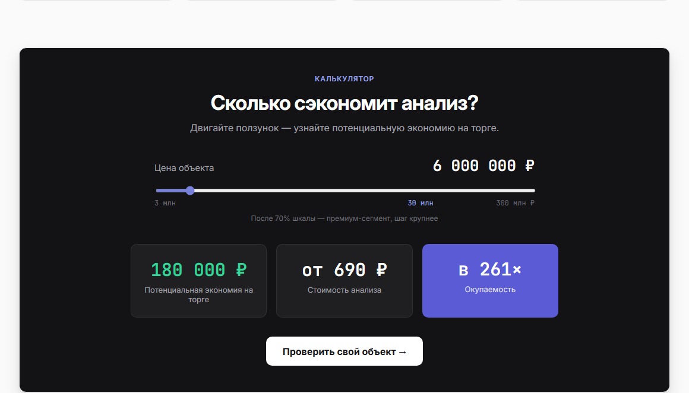
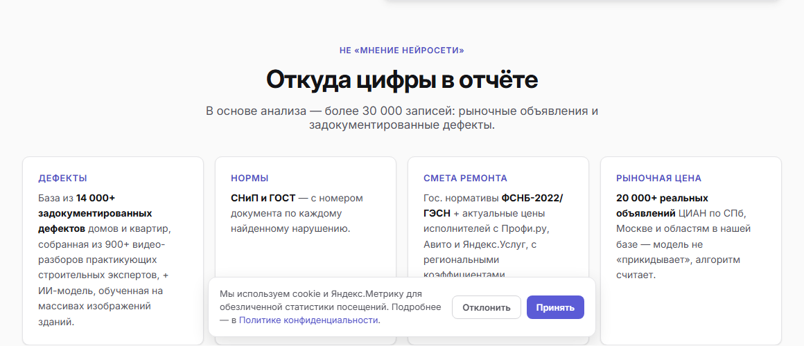
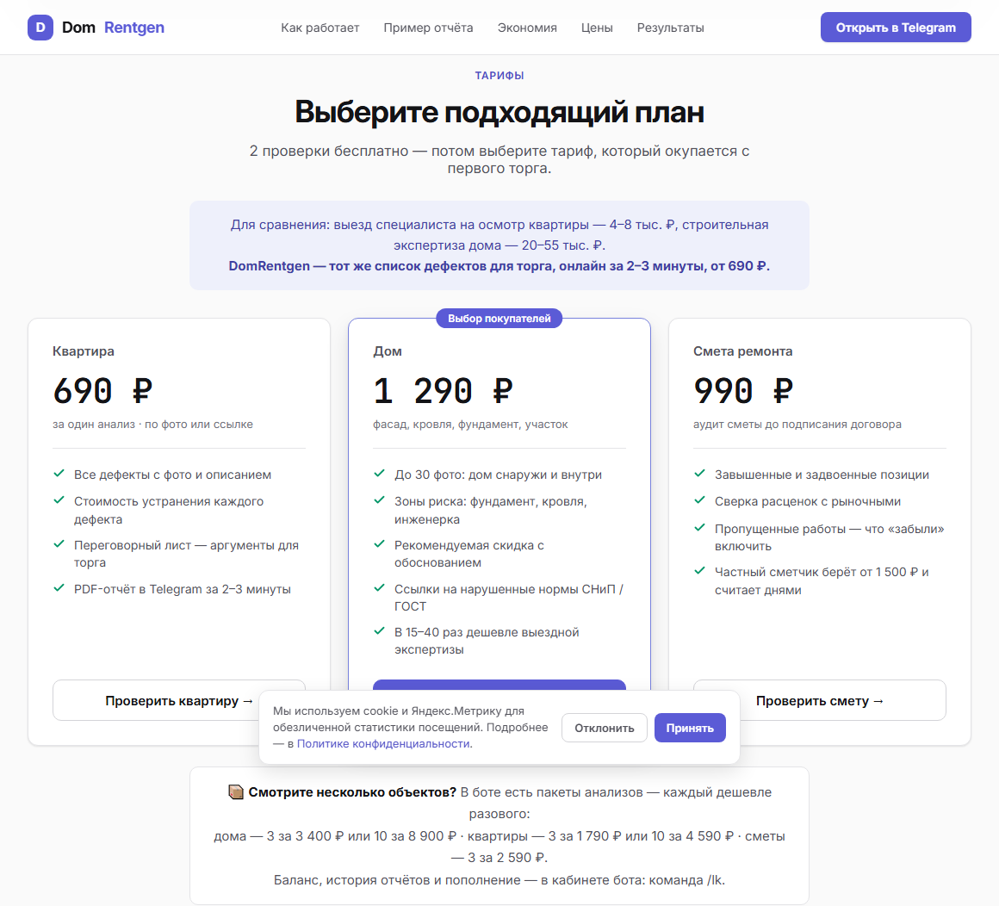
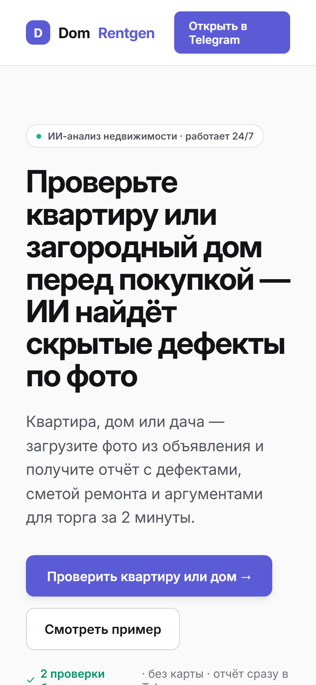

КЕЙС · СОБСТВЕННЫЙ ПРОДУКТ
14 блоков, выстроенных по маршруту сомнений покупателя, калькулятор экономии перед тарифами и отдельный блок про источники данных. Ниже — почему именно так, а не «как получилось».
DomRentgen проверяет квартиру или загородный дом перед покупкой. Покупатель отправляет боту фото из объявления, ИИ находит признаки скрытых дефектов и выдаёт отчёт: оценка состояния, смета ремонта, отклонение от рыночной цены и готовые аргументы для торга. Отчёт приходит в Telegram за две минуты и стоит от 690 ₽.
Аудитория — частный покупатель, который сомневается в объекте, но не готов платить 20–55 тысяч за строительную экспертизу, ещё не решив, будет ли вообще торговаться.
Каждый блок отвечает на конкретную мысль в голове покупателя. Такую таблицу я собираю до того, как открываю Figma — иначе получается набор красивых секций без логики.
| Блок | Какое возражение снимает |
|---|---|
| Первый экран + мокап переписки с ботом | «Непонятно, что я получу» — сразу видно интерфейс и вид отчёта |
| Полоса цифр: 14 000+ записей, до 200 000 ₽, 2 мин, от 690 ₽ | «Дорого / долго / несерьёзно» |
| «За что вы переплачиваете?» | «У меня с квартирой всё в порядке» — показывает риски в рублях |
| «Как работает» — три шага | «Наверное, это сложно» |
| «Что вы получите» — образец отчёта | «Куплю кота в мешке» |
| «Откуда цифры в отчёте» | «Это мнение нейросети» — СП и ГОСТ, ФСНБ-2022/ГЭСН, 20 000+ объявлений, 900+ видео-разборов экспертов |
| Калькулятор экономии | «Не понимаю выгоды» — считает в рублях для конкретного объекта |
| Тарифы | «Сколько стоит» — уже после того, как выгода посчитана |
| Результаты анализов | «А это работает?» — разборы реальных объектов |
| Частые вопросы | «Это официальное заключение?» — честное «нет» и объяснение, для чего годится |
| Финальный призыв + Telegram-канал | Для тех, кто ещё присматривается и не готов платить сегодня |
Человек двигает ползунок с ценой своего объекта и видит: потенциальная экономия на торге — 180 000 ₽. И только следующим экраном — что анализ стоит 690 ₽. Окупаемость в 261 раз считается сама, убеждать не нужно. Если поменять эти блоки местами, цена читается как расход, а не как вложение.

Для ИИ-продукта доверие к данным — это и есть продукт. Поэтому по каждому источнику написано, что именно оттуда берётся: нормы — с номером документа, смета — по государственным нормативам плюс актуальные цены исполнителей, рыночная цена — по базе реальных объявлений, дефекты — из 900+ видео-разборов практикующих экспертов.

На странице написано, что это визуальный ИИ-анализ, а не официальное заключение, а в частых вопросах — прямой ответ: для ипотеки и споров нужен сертифицированный эксперт. Это снимает главный риск возврата денег и, вопреки интуиции, повышает доверие: сервис не обещает лишнего.
Общий принцип, который я переношу из проекта в проект: сначала таблица «блок → возражение», потом дизайн. Красивый лендинг без этой таблицы продаёт хуже некрасивого с ней.
Цвета и типографика вынесены в переменные и текстовые стили. Практический смысл простой: сменить акцентный цвет или кегль заголовков — это правка в одном месте, а не поиск по всем блокам. Ту же систему я переиспользовал во втором продукте — HouseAudit.
#5B5BD6#4F4EC4#EEF0FB#059669#DC2626#131316#52525B#FAFAFA#E4E4E7

Структура по возражениям вашей аудитории → тексты → дизайн-система и макет в Figma → сборка на Tilda или WordPress → адаптив под пять разрешений. Начать можно с первого экрана за 1 500 ₽ — посмотрите результат и решите, продолжать ли.